今天参观了井冈山革命根据地，太震撼了！
站在江西这片红色土地上，仿佛能感受到当年革命先烈们的奋斗精神。井冈山是中国革命的摇篮，这里的每一寸土地都诉说着光荣的历史。黄洋界的炮声仿佛还在耳边回响，八角楼的灯光永远照亮着我们前行的道路。强烈推荐大家来井冈山感受红色文化！
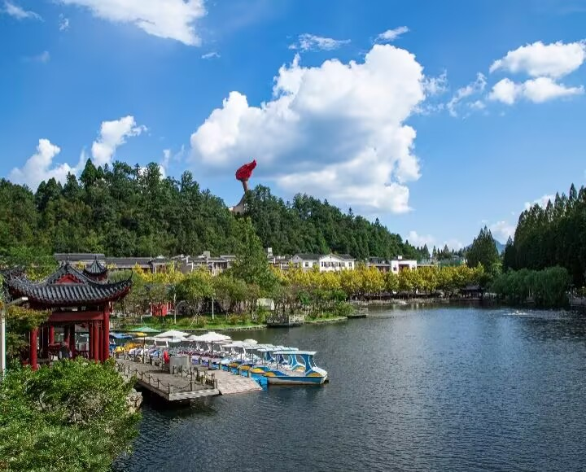
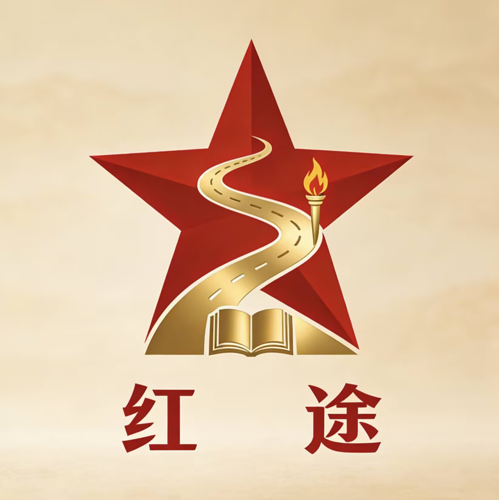
红色文化传承平台
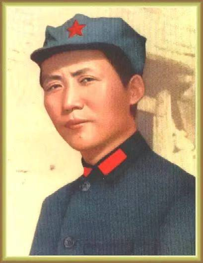
1927年10月，毛泽东率领秋收起义部队到达井冈山，创建了中国第一个农村革命根据地，开创了"农村包围城市"的革命道路...
1927年8月1日，周恩来领导发动了著名的南昌起义，打响了武装反抗国民党反动派的第一枪，标志着中国共产党独立领导革命战争的开始...
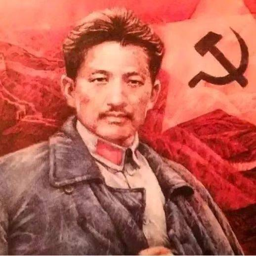
在狱中，方志敏以惊人的毅力和对祖国的无限热爱，写下了《可爱的中国》等不朽篇章，表达了对祖国美好未来的憧憬...
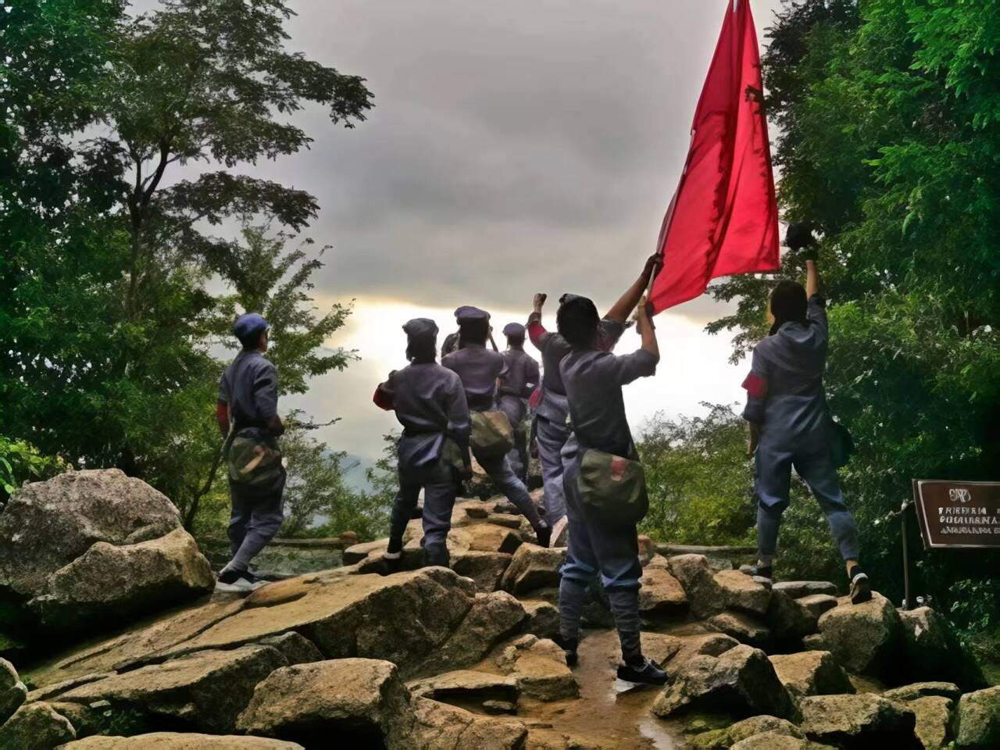
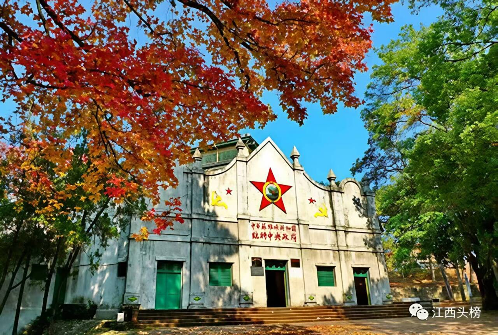
瑞金是中华苏维埃共和国临时中央政府诞生地，是全国著名的红色旅游城市和革命传统教育名城...
走进中国革命摇篮，感受井冈山精神
2026年4月15日 - 4月20日以笔为矛，书写红色记忆
报名截止：2026年5月1日展示优秀红色主题书法作品
2026年4月20日 - 5月10日用镜头记录红色圣地，展现新时代风采...
传承红色基因，弘扬革命精神
长期招募中站在江西这片红色土地上，仿佛能感受到当年革命先烈们的奋斗精神。井冈山是中国革命的摇篮，这里的每一寸土地都诉说着光荣的历史。黄洋界的炮声仿佛还在耳边回响，八角楼的灯光永远照亮着我们前行的道路。强烈推荐大家来井冈山感受红色文化！

1927年8月1日，南昌城头一声枪响，拉开了我们党武装反抗国民党反动派的大幕。这是中国共产党历史上的一个伟大事件，是中国革命史上的一个伟大事件，也是中华民族发展史上的一个伟大事件。南昌起义连同秋收起义、广州起义以及其他许多地区的武装起义，标志着中国共产党独立领导革命战争、创建人民军队的开端，开启了中国革命新纪元。
再次研读方志敏烈士的《可爱的中国》，每次都热泪盈眶。在阴暗的牢房里，在生与死的考验面前，方志敏丝毫没有动摇对马克思主义的信仰，丝毫没有动摇对共产主义的信念。他用敌人劝降的纸笔，写下了《可爱的中国》《清贫》等一篇又一篇对党和人民的无限忠诚之作。这种信仰的力量，永远值得我们学习！
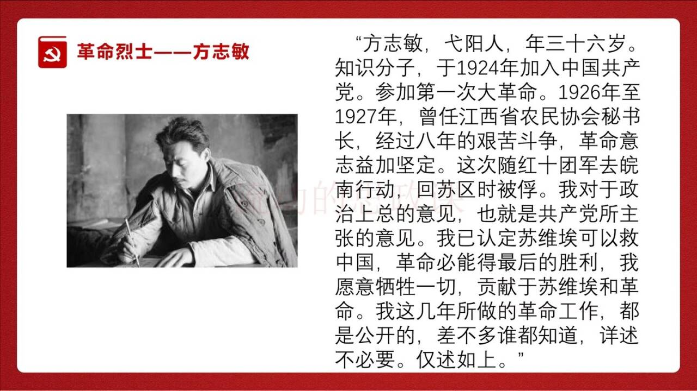
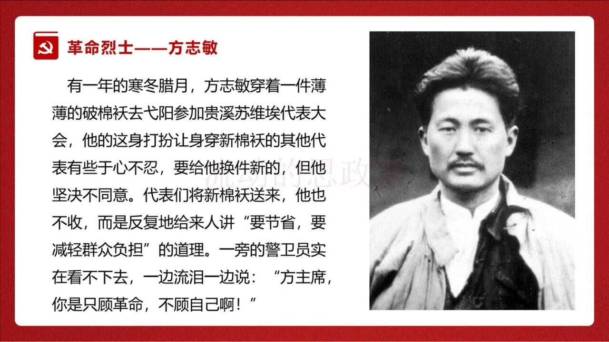
为深入学习贯彻习近平新时代中国特色社会主义思想，传承红色基因，我们将组织"重走长征路"红色研学活动。活动内容包括：于都长征出发地祭奠、瑞金苏维埃旧址参观、井冈山革命传统教育等。时间：2026年4月15日-20日，报名截止：4月5日。欢迎热爱红色文化的朋友们积极报名！
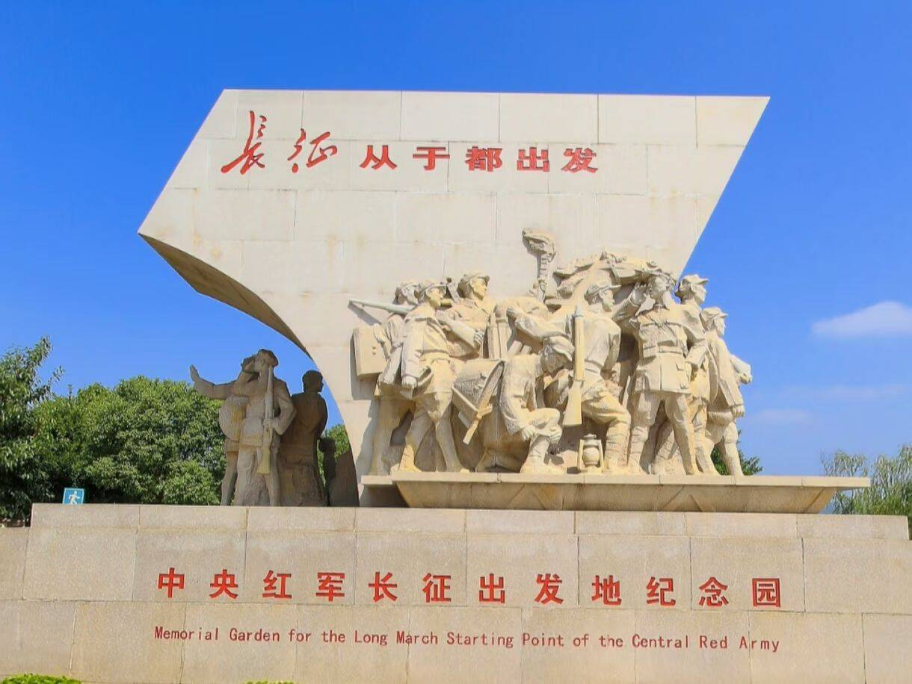
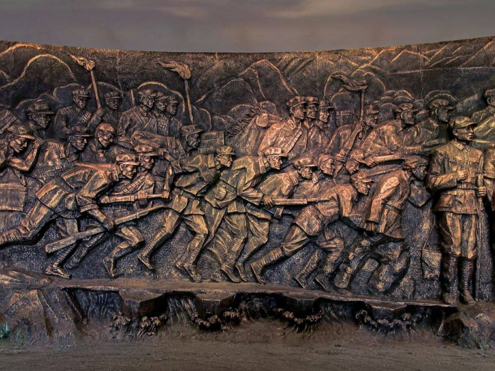
作为瑞金人，每次带外地朋友来叶坪都感到无比自豪！这里是中华苏维埃共和国临时中央政府所在地，是人民共和国的摇篮。一苏大会址、红军烈士纪念塔、红军检阅台...每一处都诉说着那段峥嵘岁月。欢迎大家来瑞金感受红色文化！
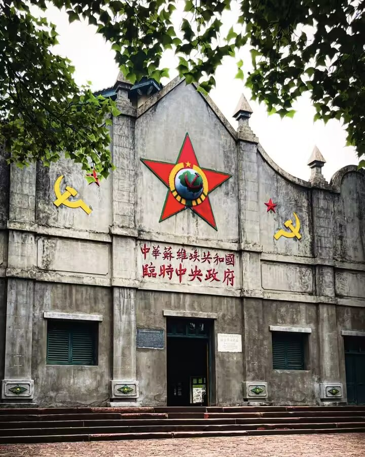
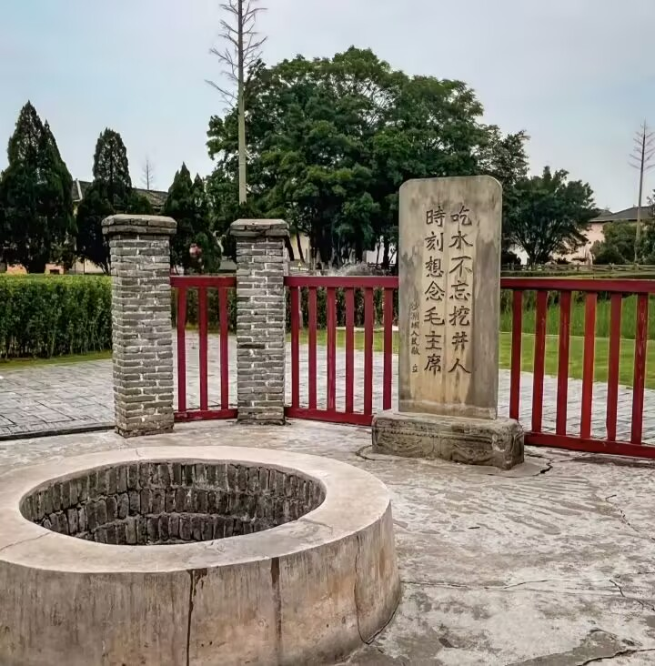
1927年9月29日，毛泽东率领秋收起义部队来到江西永新县三湾村，进行了著名的三湾改编。三湾改编创造性地确立了"支部建在连上"、"官兵平等"等一整套崭新的治军方略，从政治上组织上保证了党对军队的绝对领导，是我党建设新型人民军队最早的一次成功探索和实践。
为更好地传承红色基因，讲好红色故事，我们面向社会招募红色文化宣讲志愿者。如果你热爱红色文化，有一定的宣讲能力，欢迎加入我们！服务内容包括：红色景点讲解、红色文化进校园、社区红色故事分享会等。让我们一起做红色文化的传播者！
作为于都人，从小听着长征的故事长大。8.6万红军将士从于都河畔出发，踏上了二万五千里长征的漫漫征途。长征这一人类历史上的伟大壮举，留给我们最可宝贵的精神财富，就是中国共产党人和红军将士用生命和热血铸就的伟大长征精神。新时代，我们要继承和弘扬长征精神，不忘初心，继续前进！
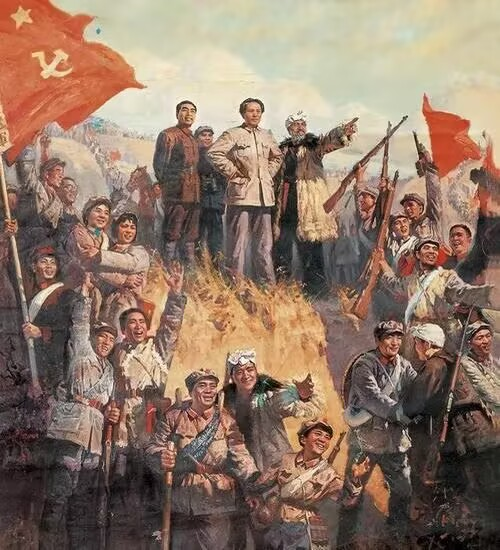
毛泽东（1893年12月26日-1976年9月9日），字润之，湖南湘潭人。中国共产党、中国人民解放军和中华人民共和国的主要缔造者和领导人。
1927年10月，毛泽东率领秋收起义部队到达井冈山，创建了中国第一个农村革命根据地，开创了"农村包围城市"的革命道路...
点击下方按钮，体验AI合影
站在江西这片红色土地上，仿佛能感受到当年革命先烈们的奋斗精神。井冈山是中国革命的摇篮，这里的每一寸土地都诉说着光荣的历史。